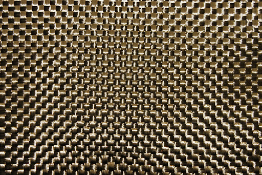
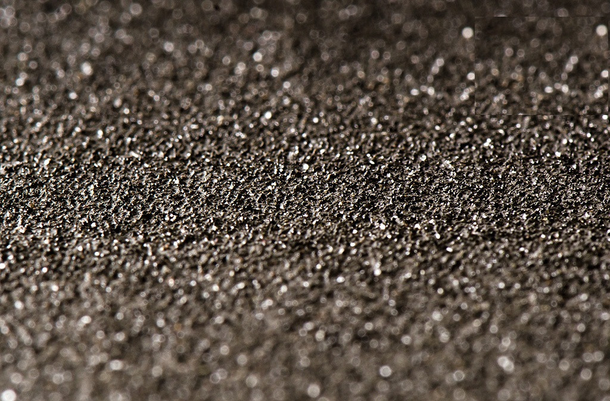

ИНЖЕНЕРИЯ МЕЖФАЗНОГО СЛОЯ
Применение аппретов на основе силанов GPTMS и APS обеспечивает ковалентное связывание между инертным базальтовым волокном и эпоксидной матрицей. Это повышает адгезию на 40% и исключает расслоение при ударных нагрузках.
Градиентное наполнение матрицы трёхфракционным карбидом кремния (F60, F120, F220) позволяет достичь плотности упаковки >92%, минимизируя микропустоты и увеличивая модуль упругости композита. Тщательный подбор размера частиц обеспечивает максимальное заполнение объёма.
АппретыGPTMS / APS
Фракции SiCF60, F120, F220
Плотность упаковки92–95%

Базальтовая ткань

SiC